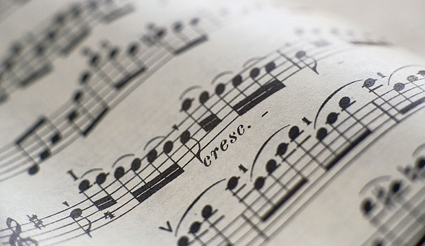
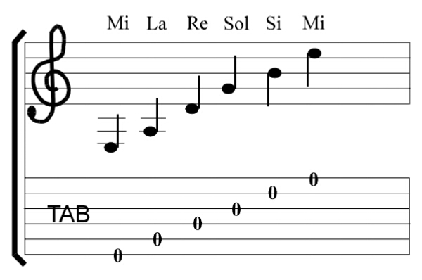
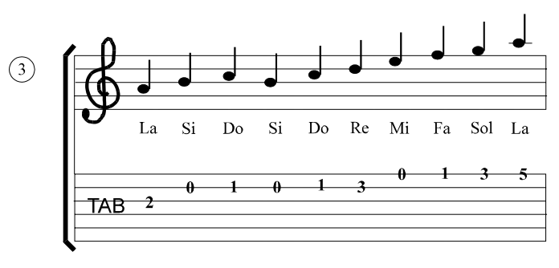

La primera forma de escritura musical se dio entre los siglos VIII y IX , hoy se conoce como notación neumática. Los neumas no indicaban ni la altura relativa del sonido ni el ritmo de la melodía, sino que monstraban el sentido o la dirección que debía tener la línea melódica.

Lectura musical : Introducción
El sistema de notación musical nos permite especificar dos de las características principales de la música: la nota que debemos tocar y su duración. En estas páginas mostraremos los aspectos básicos de la lectura musical. Comenzaremos por aprender como especificamos la duración de los sonidos y estudiaremos dos conceptos importantes: la pulsación y el compás.
La lectura musical es la capacidad de interpretar la notación musical y traducirla en sonido. Es una habilidad esencial para cualquier músico, ya que les permite tocar música que no han escuchado antes y comunicarse con otros músicos.
Hay dos tipos principales de lectura musical: la lectura a primera vista y la lectura por ensayo. La lectura a primera vista es la capacidad de tocar una pieza de música sin haberla visto antes. La lectura por ensayo es la capacidad de tocar una pieza de música después de haberla practicado varias veces.
La lectura musical es una habilidad que se puede aprender con la práctica. Hay muchos recursos disponibles para ayudar a los músicos a aprender a leer música, incluyendo libros, sitios web y aplicaciones.

Ejemplos
Algunos ejemplos de lectura musical incluyen la capacidad de identificar correctamente las notas en una partitura, leer la clave adecuada, reconocer las alteraciones y comprender la duración de cada nota.


Lecturas
Consiste en observar por un tiempo determinado un signo que se encuentra escrito, este signo expresa un sonido y el lector es el encargado de producirlo. Nos permite percibir dos características muy importantes como lo son; la nota musical y su duración.


.gif)